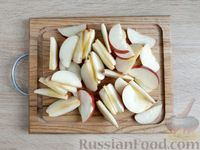

Classic apple Charlotte
Required ingredients (for 8 servings):
- 3 firm-textured apples
- 4 eggs
- 200 g sugar
- 100 g brown sugar
- 120 g (4-5 tbsp) flour
- 2 tbsp lemon juice
Optionally:
Cooking steps:
-
Cut the apples into slices as shown in the photo (or thinner)

-
Drizzle the sliced apples with lemon juice and mix well.
-
Break eggs into a large bowl. Preheat the oven to 180 degrees Celsius.
-
Add sugar to the eggs.
-
Mix the egg-sugar mixture using a mixer on high speed for at least 8-10 minutes. The mass should become pale and increase several times in volume.
-
Sift the flour into the mixture in portions.
-
Gently fold in the flour fform bottom to top with lifting motions using a spatula to ensure the batter remains airy nd does not deflate.
-
Line the bottom of the removable springform pan (23-24 cm in diameter) with parchment paper. There is no need to grease the sides of the pan.
-
Place the apple slices on the bottom of the pan, then pour the batter over them.
-
Bake the charlotte in a preheated oven set to 180 degrees Celsius for about 40 minutes.
-
Allow the charlotte to cool completely in the pan, then turn the cake upside-down onto a plate so that the apple slices face upwards.
-
When the dish has cooled completely, sprinkle it with powdered sugar.
Notes:
-
It's recommended not to pour all the sugar at once but gradually while beating.
-
In biscuit recipes, the amount of sugar in tablespoons often corresponds to the number of eggs. That means for a biscuit made with four eggs, 4-5 tablespoons (and an equal amount of flour) would suffice. Keep in mind that sugar affects not only the sweetness but also the structure and density of the batter.
-
The quality and speed of mixing may depend on the shape of the beaters, with paired main attachments being most effective.
Home